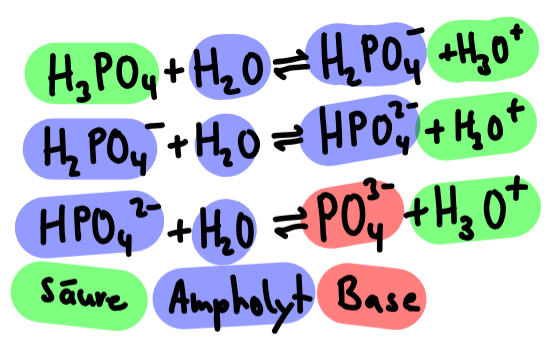
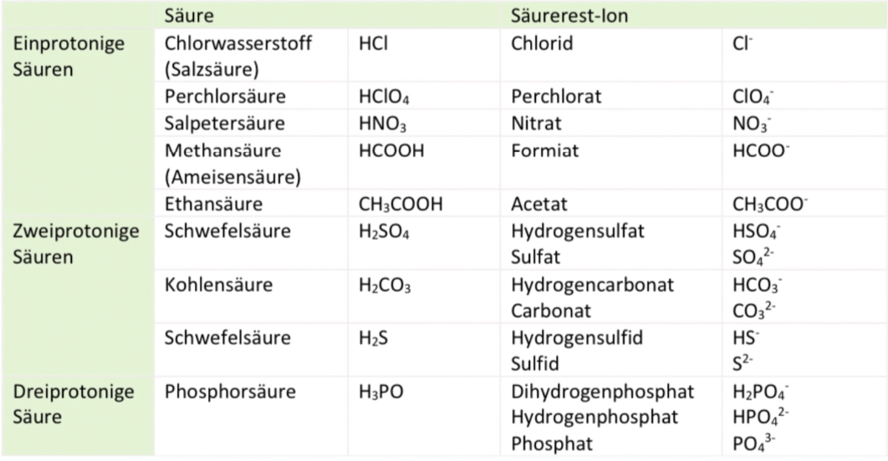
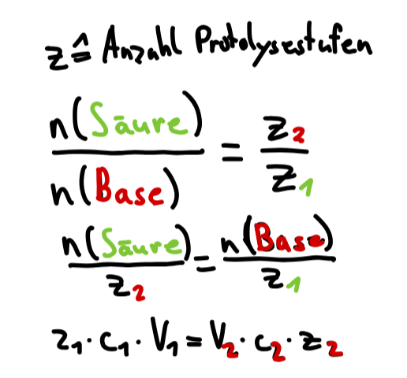
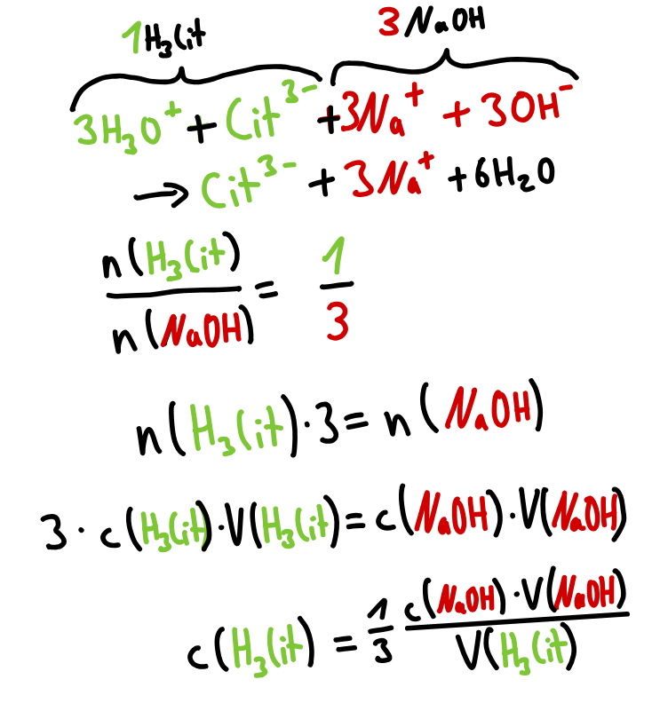

Je nach Anzhal abzuspaltender Protonen unterscheidet man ein- bzw. mehrprotonige Säuren. Ein beispiel für eine dreiprotonige Säure ist Phosphorsäure. Bei der schrittweisen Protolyse mit Wasser entstehen nacheinander Dihydrogenphosphat, Hydrogenphosphat und Phosphat:

Übersicht mehrprotoniger Säuren

Konzentrations-
bestimmung
Bei mehrprotonigen Säuren wird bei der Reaktion mit Wasser pro Mol Säure mehr als ein Mol Hydronium-Ionen gebildet. Um Beispielsweise ein Mol einer zweiprotonigen Säure mit Natronlauge(einprotonig) zu neutralisieren, benötigt man 2 Mol Natronlauge. Dieses Stoffmengenverhältnismuss bei der Berechnung der Konzentration am ÄP berücksichtigt werden:

Beispiel
Die in Zitronensaft enthaltene Citronensäure ist eine dreiprotonige Säure. Zur Neutralisation durch Natronlauge werden daher pro Mol Citronensäure drei Mol Natronlauge benötigt:

Tipps
Stelle die einzelnen Reaktionsgleichungen der einzelnen Protolysestufen auf
Die Titrationskurve mehrprotoniger Säuren hat mehrere ÄPs. Für die gesamte Säuremenge ist der letzte relevant, für die erste Protolyse logischerweise nur der Erste ÄP.
Für mehrere ÄP benötigt man ebenso mehrere passende Indikatoren